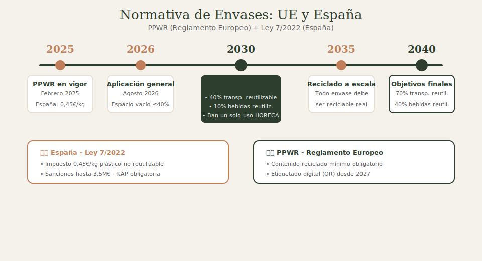
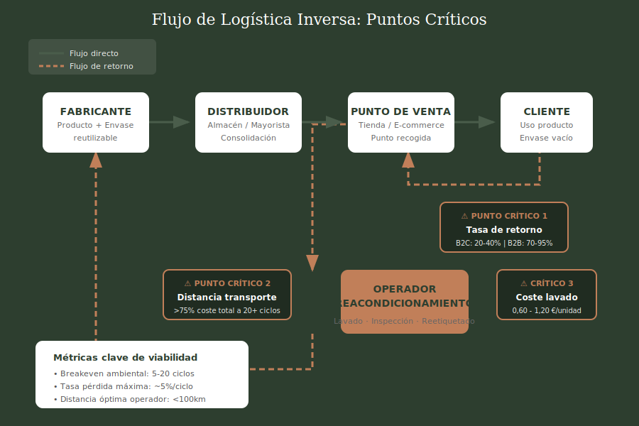
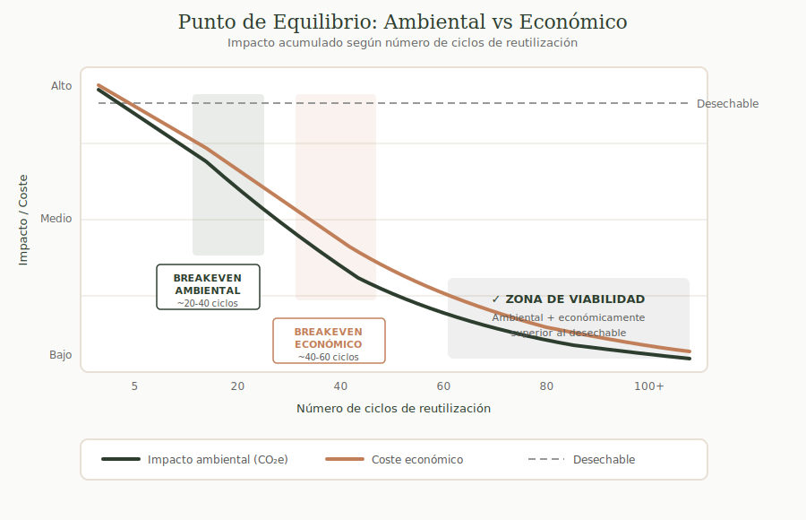

Logistica inversa para marcas artesanales: cuando tiene sentido y cuando no
Guia practica para marcas medianas que se plantean recuperar sus envases. Con ejemplos reales de cosmetica natural, alimentacion artesanal y cerveceria craft.
No todas las marcas necesitan recuperar sus envases. Algunas si, otras tienen mejores alternativas. Esta guia te ayuda a descubrir en que grupo esta la tuya - con datos reales, no ilusiones.
Jose Moscardo
Enero 2026
12 min de lectura
Si tienes una marca artesanal o sostenible, probablemente te has planteado la pregunta: deberia recuperar mis envases para reutilizarlos?
Suena bien. Es circular. Tus clientes lo valorarian. Pero hay una pregunta mas importante: funcionara para TU caso?
Despues de analizar casos de marcas de cosmetica natural, alimentacion artesanal y cerveceria craft, hay un patron claro: muchas iniciativas fracasan no porque la idea sea mala, sino porque se disenan sin entender las matematicas reales del sistema.
Este articulo no es sobre por que deberias implementar logistica inversa (eso ya lo intuyes). Es sobre como saber si funcionara para tu caso especifico antes de invertir tiempo y dinero - y que alternativas tienes si no funciona.
El contexto normativo que lo cambia todo
La presion regulatoria sobre envases esta aumentando. No es una tendencia: es una fecha limite. Y aunque hoy afecte mas a grandes empresas, las marcas medianas que se adelanten tendran ventaja competitiva.

El marco normativo europeo establece hitos claros hasta 2040
En Espana: Ley 7/2022
La Ley de Residuos y Suelos Contaminados para una Economia Circular ya esta en vigor:
- Impuesto de 0,45 euros/kg sobre plastico no reutilizable
- Responsabilidad ampliada del productor (RAP) con obligaciones de recogida
- Reduccion obligatoria del 50% en peso de plasticos de un solo uso para 2026
En Europa: PPWR (desde agosto 2026)
El Reglamento de Envases y Residuos de Envases de la UE establece objetivos de reutilizacion obligatorios: 40% de envases de transporte reutilizables para 2030, llegando al 70% en 2040.
Las matematicas que importan
Antes de disenar cualquier sistema, necesitas conocer estos numeros. No son opiniones: son datos de estudios y casos reales.
5-20
ciclos
Breakeven ambiental tipico
16%
tasa
Retorno real de Lush (B2C)
75%+
coste
Transporte en sistemas maduros
Dato incomodo: Lush, con mas de 900 tiendas y 15 anos de programa de retorno, consigue que vuelva aproximadamente un 16% de sus envases. Si tu tasa esperada es menor, las matematicas se complican.

La trampa del transporte
Si hay algo que puede matar la viabilidad de un sistema de logistica inversa, es el transporte. Y para una marca mediana, esto es aun mas critico que para una grande.
Un analisis de McKinsey encontro que para envases que alcanzan 20 rotaciones, el transporte representa mas del 75% de los costes y mas del 65% de las emisiones de CO2.
El transporte no es un coste mas. Es EL coste. La cercania con tu cliente - o la densidad de puntos de recogida - puede hacer o deshacer tu sistema.
Implicaciones para marcas medianas
- Venta local o en tienda fisica cambia todo. Si tus clientes vienen a ti, eliminas el transporte de retorno.
- E-commerce disperso es el peor escenario. 50 clientes en 40 ciudades diferentes = logistica inversa inviable.
- Las alternativas hibridas funcionan mejor. Retorno en siguiente pedido, puntos de recogida concentrados, alianzas con tiendas locales.
Casos reales: que funciona y por que
No teorias. Ejemplos de marcas reales operando sistemas de circularidad en Espana y Europa.
Envases de aluminio 100% retornables con sistema de deposito. El cliente paga un deposito con su primera compra que se le devuelve al retornar el envase.
Por que funciona: Incentivo economico directo, material duradero, operacion concentrada.
Mascarilla facial gratis por cada 5 envases devueltos en tienda. En 2024, recuperaron 2,7 millones de piezas (16% de lo que ponen en mercado).
Por que funciona: Red de tiendas propias, incentivo tangible, 15 anos educando al cliente.
Recipientes retornables de vidrio de 1-2L que el cliente compra una vez y rellena en cada visita. Paga por el liquido, no por el envase.
Por que funciona: El cliente viene a ti (cero logistica), envase coleccionable, experiencia diferenciada.
Supermercado online que entrega en envases retornables y los recoge cuando haces tu siguiente pedido. Sin limite de tiempo para devolver.
Por que funciona: Logistica de entrega ya existe, area geografica concentrada, variedad de productos.
El punto de equilibrio real
El "breakeven" tiene dos dimensiones que a menudo se confunden:

El breakeven ambiental y economico no siempre coinciden
Breakeven ambiental
El numero de ciclos necesarios para que el envase reutilizable tenga menor impacto que el desechable equivalente:
| Tipo de envase |
Ciclos para breakeven |
Contexto tipico |
| Tarro vidrio cosmetica |
5-8 ciclos |
Cremas, balsamos, mascarillas |
| Botella vidrio 500ml |
4-6 ciclos |
Aceites, vinagres, bebidas |
| Envase aluminio |
3-5 ciclos |
Cosmetica solida, balsamos |
| Growler vidrio 1-2L |
2-4 ciclos |
Cerveza craft, kombucha |
Breakeven economico
El breakeven economico suele requerir mas ciclos que el ambiental - entre 15 y 60 segun el caso. Esto significa que un sistema puede ser "verde" pero no rentable, o al reves.
Marco de decision: Te conviene o no?
Probablemente SI tiene sentido si...
- Vendes en tienda fisica o mercados (el cliente viene a ti)
- Tu cliente compra regularmente (minimo cada 2-3 meses)
- Tu operacion esta concentrada geograficamente
- Tu envase tiene valor percibido alto
- Tienes capacidad de comunicar y educar a tu cliente
Probablemente NO tiene sentido si...
- E-commerce con clientes dispersos por toda Espana
- Tu producto es de compra unica o muy esporadica
- El envase representa bajo coste vs. producto
- No tienes canal directo de comunicacion con clientes
- No puedes asumir perdida parcial de envases
Alternativas cuando la logistica inversa no funciona
Si tu caso no encaja con logistica inversa tradicional, hay otras formas de avanzar en circularidad:
1. Packaging disenado para segunda vida
Envases que el cliente quiera conservar: tarros de ceramica, latas decorativas, cajas de madera. El cliente no devuelve porque no quiere devolverlo.
2. Sistema de refill sin retorno
El cliente conserva el envase principal y compra recargas en packaging minimo. Reduce residuos sin gestionar devoluciones.
3. Alianzas con puntos de recogida
Acuerdo con tiendas locales o espacios de coworking como puntos de deposito. Concentras recogida sin gestionar logistica tu mismo.
4. Sistema de deposito premium
Como RRR'biocosmetics: el cliente paga deposito por el envase. Si lo devuelve, recupera el dinero. Si no, ha pagado por el.

El mejor sistema de retorno es el que no necesitas: envases que el cliente quiere conservar
Conclusion: Entonces que?
La logistica inversa puede ser una herramienta poderosa de circularidad y diferenciacion. Pero no es la unica herramienta - y no es la correcta para todos los casos.
Funciona cuando las condiciones son las correctas: venta local o concentrada, cliente recurrente, incentivo claro, y vision a largo plazo. Fracasa cuando se disena sobre suposiciones optimistas en lugar de datos reales de TU operativa.
Lo que si puedes hacer hoy: Antes de invertir en infraestructura, haz un piloto pequeno. Mide tasa de retorno real con 50 clientes. Pregunta directamente si devolverian el envase. Los datos de un piloto de 3 meses valen mas que un Excel de proyecciones optimistas.
La regulacion viene. Las fechas estan puestas. La pregunta es si adelantas la tendencia (y aprendes con margen de error) o si esperas a que sea obligatorio (y adaptas con prisas y costes). Pero adelantar no significa implementar el sistema mas complejo posible - significa encontrar el sistema correcto para tu realidad.